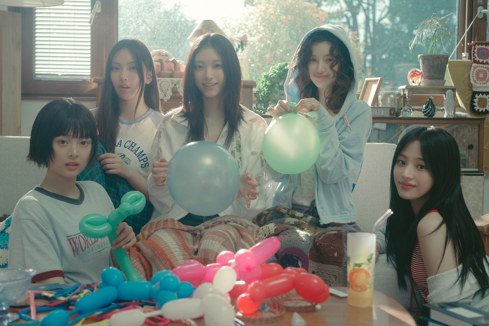

- MINJI
- HANNI
- DANIELLE
- HAERIN
- HYEIN
2022년 7월 22일에 데뷔한 ADOR 소속의 5인조 다국적 걸그룹.

그룹명
대중음악은 일상과 초근접해 있는 문화이기 때문에 마치 매일 입는 옷과 같다.
특히 진(Jean)은 시대를 불문해 남녀노소 모두에게 사랑받아 온 아이템이다.
뉴진스(NewJeans)에는 매일 찾게 되고 언제 입어도 질리지 않는 진처럼
시대의 아이콘이 되겠다는 포부와 New Genes, 즉 새로운 시대를 열겠다는 각오도 동시에 담겨 있다.
콘셉트
5명의 멤버가 모여 어딘가 자유분방하면서도 결합력 있는 독특한 퍼포먼스를 선보인다. 소녀들이 '재밌게 즐긴다'란 표현이 어울리는 뉴진스만의 청춘 하이틴스러운 컨셉은 '자연스럽다'라는 느낌을 주어, 뉴진스가 많은 대중들에게 사랑 받는 데에 크게 기여한다.
데뷔곡 Attention과 Hype Boy에서부터 대중들의 눈길을 사로잡는 참신한 군무로 "자칫하면 어려보이기만 할 수 있는 십대들을 데리고 최적의 컨셉으로 밀고나갔다"라는 평을 받으며 그룹의 이미지를 확실하게 각인시켰다.
이후 발매된 Ditto와 Super Shy 등 여러 곡에서 역시 무대를 순수하게 즐기며 뛰노는듯한 멤버들의 모습으로 좋은 평가를 받았다.
레트로와 힙합을 적절히 섞은 음악적 퀄리티 역시 호평받는 부분이다.
레트로 관련 작업물로 한국 음악계에서 호평받은 프로듀서 250이 뉴진스의 색깔에 걸맞게 호화로운 프로듀싱을 하고,
각 멤버들의 편안한 음색이 조화를 이루어 뉴진스를 한 층 더 뉴진스답게 만들어준다.
FRNK 프로듀서의 손에서 나온 Cookie나 OMG 등의 노래에선 통통 튀는 특유의 비트로 뉴진스의 트렌디하고 힙한 면모를 부각시켰으며, 해외에서 특히 사랑받는다